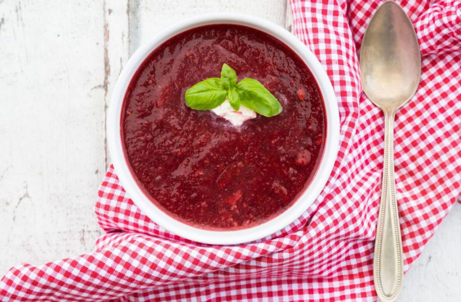

Beetroot, pomegranate and parsnip soup recipe

Serves:
5-a-day:
Prep:
Cooking:
Skill:
4
2
10 Min
25 Min
Easy
For a warming winter lunch or dinner, what’s better than a nice and hearty soup when it’s cold outside? This beautifully coloured soup is delicious served with a chunk of freshly baked bread. It’s vegan, but vegetarians and meat eaters are sure to love it too. Beetroot is a great source of iron and folate and it’s said to help lower blood pressure, boost exercise performance and even prevent dementia. Pomegranate is full of vitamins A and C, as well as iron and other antioxidants. Parsnip gives this soup a lovely texture and makes it a really filling meal, while the veg also contains potassium, zinc and a whole range of vitamins. So making a big pot of this soup will help you stay healthy this week
Ingredients
- 75g (3oz) onion, finely chopped
- 175g (6oz) carrots, diced
- 150g (5oz) parsnips, thinly sliced
- 800ml (1⅓ pints) light stock
- 350g (12oz) cooked beetroot (not in vinegar), sliced
To Garnish:
- 2tbsp walnut pieces (optional)
Method
- To make this superfood recipe, heat the oil in a large saucepan and sweat the onion, carrot and parsnip for 5 mins until it starts to soften. Add the coriander and cook for a further 2 mins.
- Add the stock and beetroot. Bring to the boil and then simmer for 20 mins, adding 2 tsp of dill for the last 2 or 3 mins.
- Cut the pomegranate in half and extract the juice using a lemon squeezer. Blend the soup and add the juice to taste (up to 4 tbsp).
- Garnish with the yoghurt, walnut pieces and remaining 2 tsp chopped dill. Serve with walnut bread or granary or rye rolls (bread is optional and not included in calorie/fat count).